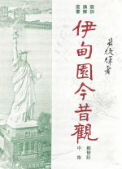

一 創世記(中)
- 亞伯蘭三件事物 -- 基督徒靈性生活三要
- 亞伯蘭認妹不認妻 -- 基督徒常犯的錯誤
- 亞伯蘭與羅得 (一) -- 爭與讓
- 亞伯蘭與羅得 (二) -- 俗眼與信眼
- 亞伯蘭與羅得 (三) -- 奇妙的得勝
- 亞伯蘭得勝帶來三樣得 -- 得榮耀、得福氣、得賞賜
- 亞伯蘭對財物的態度 -- 基督徒對財物應有的態度
- 神對得勝的亞伯蘭 -- 給得勝者的安慰
- 立約的禮儀 -- 從禮儀中看神的應許和人的義務
- 亞伯蘭納妾的錯誤 -- 教會常見的四種現象
- 亞伯蘭納妾的家庭糾紛 -- 人意成就的影響
- 夏甲逃走到書珥 -- 耶和華是看顧人的神
- 神又向亞伯蘭顯現 -- 沉默、宣告、改名
- 神與亞伯蘭立約重申應許 -- 基督徒的三種名份
- 割禮 -- 立約的證據 -- 割禮的教義和靈訓
- 亞伯拉罕接待客旅 (一) -- 基督徒的美德
- 亞伯拉罕接待客旅 (二) -- 撒拉必生一子的啟示
- 亞伯拉罕接待客旅 (三) -- 基督徒向主的三字訣
- 亞伯拉罕接待客旅 (四) -- 豈可瞞着亞伯拉罕呢
- 亞伯拉罕的六次禱告 (一) -- 禱告必備的條件之一
- 亞伯拉罕的六次禱告 (二) -- 禱告必備的條件之二
- 亞伯拉罕的六次禱告 (三) -- 禱告必備的條件之三
- 所多瑪的罪惡 -- 被神毀滅的幾種原因
- 羅得的錯誤 -- 屬世基督徒的靈程起伏
- 羅得的妻、婿和兩個女兒 -- 三種不同的看
- 亞伯拉罕再次不認妻 -- 信心與恩典的關係
- 從以撒誕生看神 -- 神的應許、計劃和目的
- 對以撒的三種笑 -- 對基督徒的三種笑
- 夏甲和以實瑪利母子被趕逐 -- 一皮袋水與一口水井
- 亞伯拉罕獻以撒 (一) -- 基督徒的三種試驗
- 伯伯拉罕獻以撒 (二) -- 相信順服的賞賜
- 撒拉死而埋葬了 -- 從六個問題看人生真諦
- 亞伯拉罕為兒子以撒娶婦 (一) -- 基督徒婚姻問題
- 亞伯拉罕為兒子以撒娶婦 (二) -- 聖靈與基督徒
- 亞伯拉罕為兒子以撒娶婦 (三) -- 聖子耶穌與基督徒